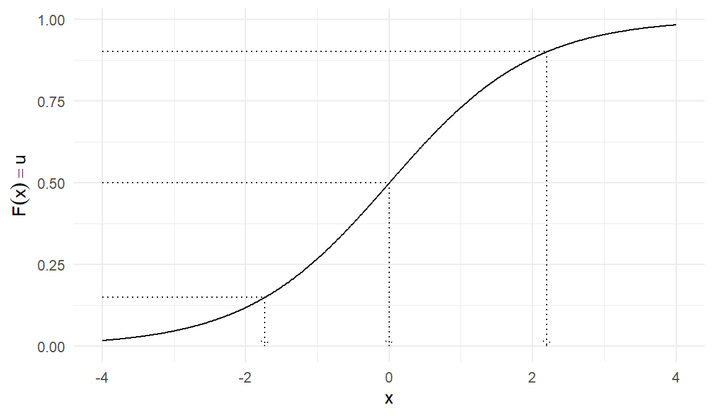
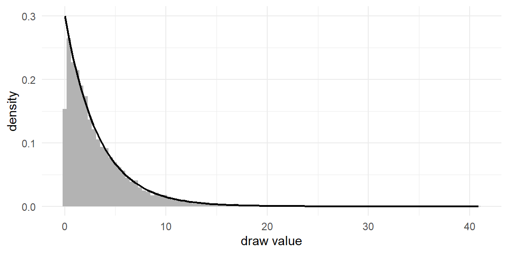
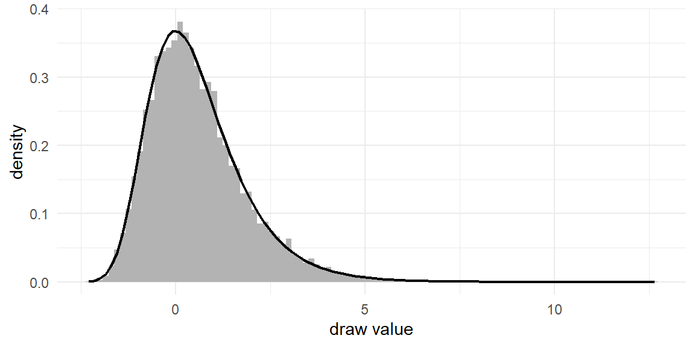
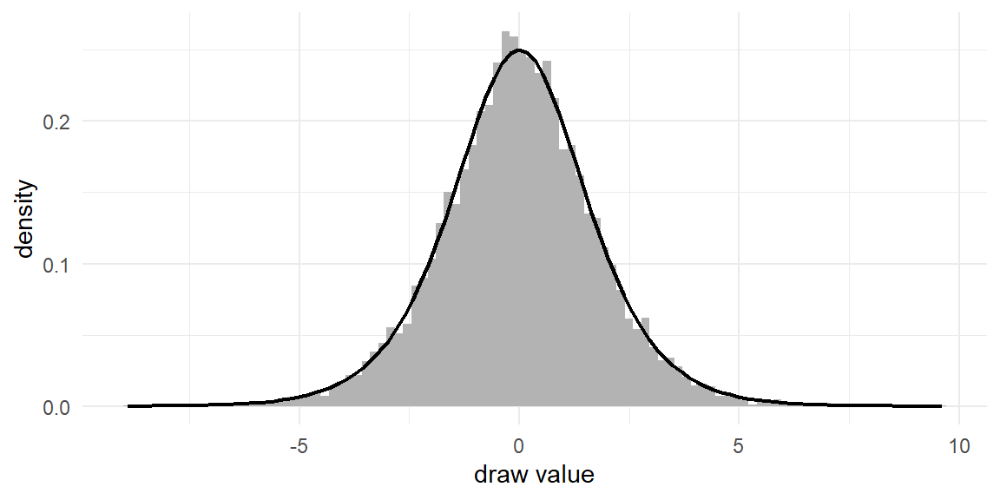
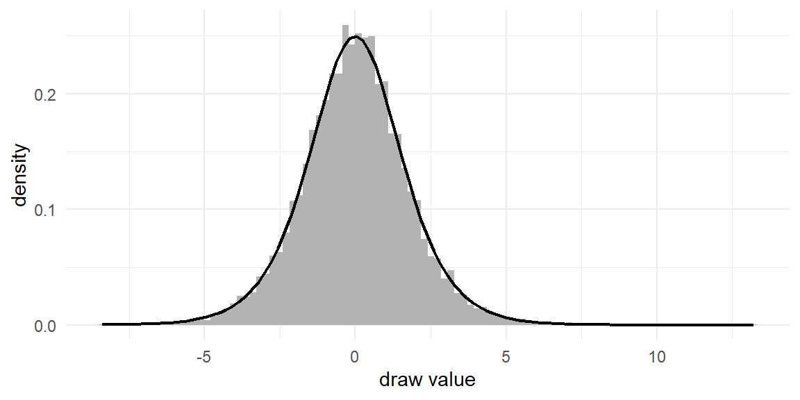
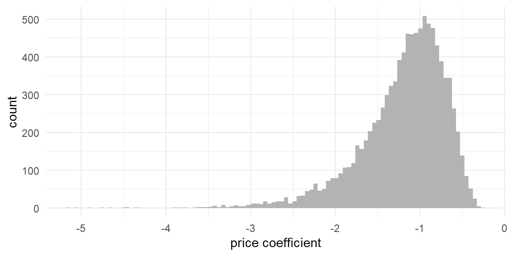
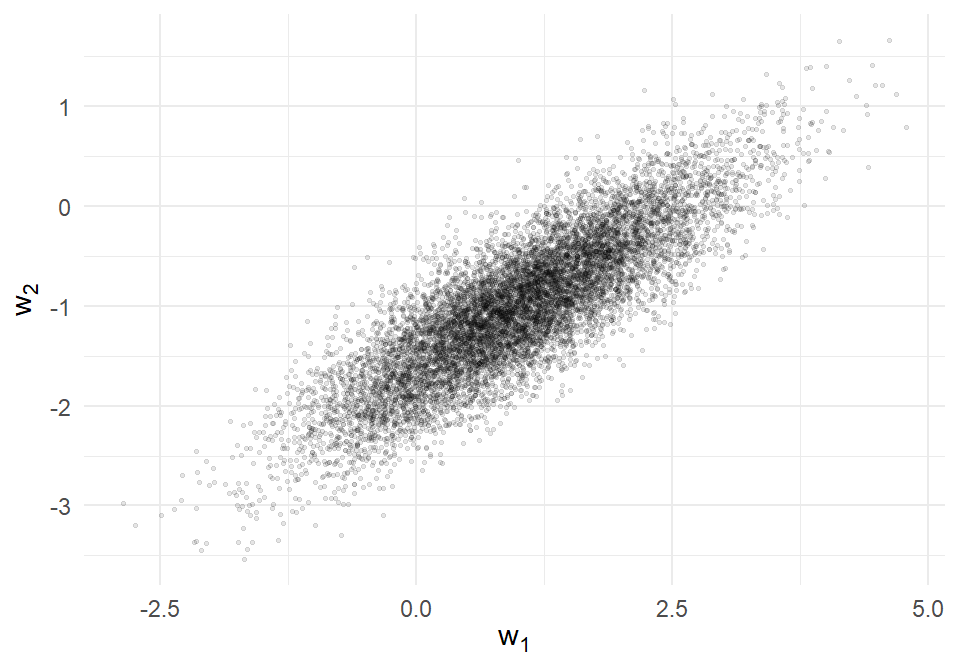
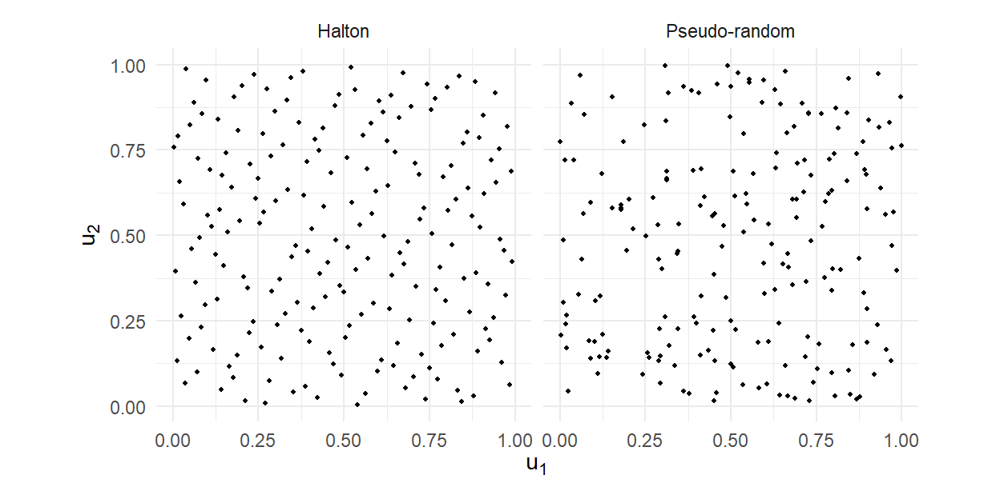

set.seed(42)
runif(3)[1] 0.9148060 0.9370754 0.2861395In Chapter 1 we approximated choice probabilities by drawing values of \(\varepsilon\) from a density \(f\) and averaging an indicator function over the draws. We got away with it because R happened to supply the draws we needed: runif() for the uniform, rlogis() for the logistic. This chapter looks under the hood. Where do random draws come from? How do we produce them for densities R does not supply? And how do we produce correlated draws, truncated draws, and draws that cover a space more evenly than randomness allows?
I want to persuade you that this material is not a detour. Draws are the raw material of every computational method in this book, and they appear in three distinct roles:
By the end of the chapter you will be able to generate draws from essentially any distribution this book requires, starting from nothing but uniform random numbers.
Computers are deterministic machines, so they cannot produce truly random numbers.1 What they produce instead are pseudo-random numbers: long sequences generated by a deterministic recurrence, initialized by a seed, that pass every practical statistical test of randomness. R’s default generator (the Mersenne Twister) produces values that behave, for our purposes, exactly like independent draws from the Uniform\((0,1)\) distribution.
Determinism is a gift for scientific work. Because the sequence depends only on the seed, setting the seed makes an entire simulation exactly reproducible — on your machine, on my machine, today, and in five years. That is why every stochastic code chunk in this book begins with set.seed(). When you see
set.seed(42)
runif(3)[1] 0.9148060 0.9370754 0.2861395you will get those same three numbers on your computer. Re-running the chunk without resetting the seed continues the sequence and gives fresh values; resetting the seed replays it. Beyond reproducibility, seeds are a debugging instrument: when a simulation misbehaves, freezing the randomness lets you isolate what changed. And in Chapter 12 the ability to reuse the same draws across likelihood evaluations turns out to be essential for the estimator itself, not merely convenient.
Everything else in this chapter is a transformation of uniform draws. That is worth internalizing: rnorm(), rlogis(), rexp() and their relatives are not separate sources of randomness — they are deterministic functions applied to the same uniform stream. Our first and most important transformation makes the principle explicit.
Suppose we want draws of a random variable \(X\) with cumulative distribution function (CDF) \(F_X\), and suppose we can compute the inverse CDF \(F_X^{-1}\) (also called the quantile function). Take \(U \sim \text{Uniform}(0,1)\) and define the transformation \(T(U) = F_X^{-1}(U)\). I claim \(X = T(U)\) has exactly the distribution we want. The proof is three lines: for any \(x\),
\[ \begin{aligned} \Pr \left(T(U) \le x \right) &= \Pr \left(F_X^{-1}(U) \le x \right) \\ &= \Pr \left(U \le F_X(x) \right) \\ &= F_X(x) \end{aligned} \tag{2.1}\]
where the second equality applies the (increasing) function \(F_X\) to both sides of the inequality, and the third uses the defining property of the uniform: \(\Pr(U \le u) = u\) for \(u \in [0,1]\). The transformed draw has CDF \(F_X\), which is what it means to have the distribution of \(X\).
The geometry is worth seeing once. The CDF maps values of \(X\) (horizontal axis) to probabilities (vertical axis); the inverse transform runs the map backwards. A uniform draw picks a random height on the vertical axis, and we read across to the curve and down to the horizontal axis:

Notice how the method automatically concentrates draws where the density is high: where \(f\) is large, \(F\) is steep, so a wide band of uniform heights maps into a narrow band of \(x\) values.
Let’s implement the method for four distributions. Each follows the same two-step pattern — invert the CDF algebraically, then apply it to uniform draws — and each earns its place in this book.
The exponential distribution has CDF
\[ F(y) = 1 - \exp\left( -\lambda y \right) \hspace{1em} \text{for} \ y \ge 0 \]
Setting \(F(y) = u\) and solving for \(y\): \(u = 1 - e^{-\lambda y}\) implies \(e^{-\lambda y} = 1-u\), so
\[ F^{-1}(u) = -\log(1-u) / \lambda \]
Two lines of algebra, two lines of code:
set.seed(2020)
R <- 1e4
lambda <- 0.3
u <- runif(R)
y <- -log(1-u)/lambdaAs in Chapter 1, R counts simulation draws — deliberately not N, which we reserve for counting decision-makers from Chapter 3 onward. (And a naming note: this chapter’s code uses y as the generic name for a draw; it is not yet the choice outcome \(y\) of the model chapters.)
Did it work? The standard check — one we will repeat so often that we write it as a small helper function — is to plot a histogram of the draws against the true density. If the transformation is correct, the histogram should trace the density curve, with the agreement improving as \(R\) grows.
plot_draws <- function(y, dens_fun) {
ggplot(data.frame(y = y), aes(x = y)) +
geom_histogram(aes(y = after_stat(density)),
bins = 100, fill = "grey70") +
geom_function(fun = dens_fun, linewidth = 0.8) +
labs(x = "draw value", y = "density")
}
plot_draws(y, function(x) dexp(x, rate = lambda))
The helper plot_draws() takes the vector of draws and the true density function; we will reuse it throughout the chapter. This histogram-against-density picture is the simplest instance of a discipline that recurs all book long: whenever you generate anything by simulation, check it against something you know.
The Gumbel distribution — also called the Type I Extreme Value distribution, or EV1 — has CDF
\[ F(y) = \exp \left( -\exp \left( -y \right) \right) \]
You met its close relative in Chapter 1, and you will not escape it: the Gumbel is the error distribution of logit models, chosen because the difference of two independent Gumbels is logistic and the maximum of several Gumbels is again Gumbel — the properties that make the MNL’s closed form possible (Chapter 7). Inverting: \(u = e^{-e^{-y}}\) gives \(\log u = -e^{-y}\), so
\[ F^{-1}(u) = -\log(-\log(u)) \]
set.seed(2021)
R <- 1e4
u <- runif(R)
y <- -log(-log(u))Base R has no dgumbel(), but the density is simple enough to write ourselves — differentiate the CDF to get \(f(y) = \exp\!\big(\!-\!\big(y + e^{-y}\big)\big)\):
dgumbel <- function(x) exp(-(x + exp(-x)))
plot_draws(y, dgumbel)
Keep y <- -log(-log(runif(R))) in your fingers. When we simulate MNL choice data from Chapter 7 onward, this one-liner generates the unobserved utility for every alternative in every choice task.
The logistic distribution — the \(f\) of the binary logit model in Section 1.3 — has CDF
\[ F(y) = \frac{1}{1+\exp \left( -y \right)} \]
Inverting: \(u(1 + e^{-y}) = 1\) gives \(e^{-y} = (1-u)/u\), so
\[ F^{-1}(u) = \log(u) - \log(1-u) \]
set.seed(2022)
R <- 1e4
u <- runif(R)
y <- log(u) - log(1-u)plot_draws(y, dlogis)
So rlogis(R) — which we used in Section 1.3 without comment — is nothing more mysterious than log(u) - log(1-u) applied to uniform draws.
While we are here, let’s verify a claim made two pages ago, because it is the algebraic heart of the logit family: the difference of two independent Gumbel draws is logistic. Rather than prove it (see Train (2009), Section 3.1), we can check it by simulation — our tools are already good enough to interrogate distribution theory:
set.seed(2023)
R <- 1e4
eps1 <- -log(-log(runif(R)))
eps2 <- -log(-log(runif(R)))
plot_draws(eps1 - eps2, dlogis)
The histogram of \(\varepsilon_1 - \varepsilon_2\) sits exactly on the logistic density. This is why Section 1.3 could describe one utility with a single logistic error. Give each action its own utility — \(U_1 = V_1 + \varepsilon_1\) for buying and \(U_0 = V_0 + \varepsilon_0\) for walking away, where \(V\) denotes the representative (observable) part of utility and \(\varepsilon\) the unobserved part. Buying beats not buying when \(U_1 > U_0\), i.e., when \(\varepsilon_0 - \varepsilon_1 < V_1 - V_0\), and if both \(\varepsilon\)’s are Gumbel then that difference is logistic. Two-error and one-error tellings of the binary logit are the same model.
The normal CDF has no closed-form expression, so its inverse has no tidy algebraic formula like the previous three. But numerical routines for \(\Phi^{-1}\) are excellent and built into R as qnorm(), so the inverse transform method still applies:
set.seed(2024)
R <- 1e4
u <- runif(R)
y <- qnorm(u)Of course, R also provides rnorm() directly, and in practice we use it. The point of this example is conceptual: qnorm(runif(R)) and rnorm(R) are the same idea,2 and any distribution with a computable quantile function is one line away. File this away — in Chapter 12 we will deliberately generate normal draws as qnorm() applied to something other than uniform draws, and the fact that “draws = quantile function applied to points in \((0,1)\)” is what makes that substitution legitimate.
The inverse transform gets us standard distributions. Applied work almost always needs distributions with particular locations, scales, and shapes, and these come from further transformations of standard draws. Three matter enormously in this book.
Location–scale. If \(Z\) is standard normal, then \(\mu + \sigma Z \sim N(\mu, \sigma^2)\). Trivial, but say it once precisely, because its multivariate version (next section) is the backbone of every heterogeneity model we estimate:
set.seed(2025)
z <- rnorm(1e4)
y <- 2 + 0.5*z # N(2, 0.25)
c(mean(y), sd(y))[1] 2.0026487 0.5009752Lognormal. If \(Z \sim N(\mu, \sigma^2)\) then \(e^Z\) is lognormal — always positive, right-skewed. Why care? Jump ahead to Chapter 13 and Chapter 17: when we let the price coefficient vary across people, a normal distribution awkwardly implies some people like higher prices. The standard fix is to model the coefficient as \(-e^Z\), which is always negative. That fix is this transformation:
set.seed(2026)
beta_price <- -exp(rnorm(1e4, mean = 0.1, sd = 0.4))
ggplot(data.frame(b = beta_price), aes(b)) +
geom_histogram(bins = 100, fill = "grey70") +
labs(x = "price coefficient", y = "count")
Truncation. Sometimes we need draws from a distribution restricted to an interval — a normal confined to the positive half-line, say. The elegant route is a small extension of the inverse transform. If \(X\) has CDF \(F\) and we want \(X\) conditioned on \(a < X \le b\), note that the conditional CDF is \(\left(F(x) - F(a)\right)/\left(F(b) - F(a)\right)\): it runs from 0 at \(a\) to 1 at \(b\). Inverting it says: map a uniform draw into the \((F(a), F(b))\) sub-interval, then apply the ordinary quantile function:
\[ X = F^{-1}\big( F(a) + u \cdot (F(b) - F(a)) \big) \tag{2.2}\]
rtnorm <- function(n, mean = 0, sd = 1, a = -Inf, b = Inf) {
Fa <- pnorm(a, mean, sd)
Fb <- pnorm(b, mean, sd)
u <- runif(n)
qnorm(Fa + u*(Fb - Fa), mean, sd)
}set.seed(2027)
y <- rtnorm(1e4, a = 0.5, b = 2)
plot_draws(y, function(x)
dnorm(x) / (pnorm(2) - pnorm(0.5)) * (x > 0.5 & x <= 2))![10,000 draws from a standard normal truncated to (0.5, 2], against the renormalized true density on that interval.](02_draws_files/figure-html/fig-truncnorm-1.png){#fig-truncnorm width=576}
Do not skim past rtnorm(); it is the quiet workhorse of Part IV. The Bayesian estimation of the probit model (Chapter 19) proceeds by drawing each decision-maker’s latent utility from a normal distribution truncated to the region consistent with their observed choice, thousands of times, inside a Gibbs sampler. The Albert–Chib sampler of Chapter 16 does the same for binary data. When we get there, the samplers will be new but this function will not be.
Now for the transformation that carries the most weight in this book. We often need draws of a vector \(\mathbf{w} \sim N(\boldsymbol{\mu}, \Sigma)\): jointly normal components with means \(\boldsymbol{\mu}\) and covariance matrix \(\Sigma\). Starting in Chapter 13, every simulated “population of decision-makers” is a cloud of multivariate normal draws — one coefficient vector \(\boldsymbol{\beta}_n\) per person — and the samplers of Chapter 16, Chapter 17, and Chapter 19 draw multivariate normals at every iteration.
The recipe generalizes location–scale. In one dimension we scaled by \(\sigma\), the square root of the variance. In \(K\) dimensions we need a “square root” of the covariance matrix: a matrix \(L\) such that
\[ L L' = \Sigma \tag{2.3}\]
One such matrix always exists for a valid (positive definite) covariance matrix: the Cholesky root, a lower-triangular \(L\) computable by chol() in R.3 Given \(L\), take a vector \(\mathbf{z}\) of \(K\) independent standard normal draws and set
\[ \mathbf{w} = \boldsymbol{\mu} + L \mathbf{z} \tag{2.4}\]
Then \(\mathbf{w}\) is exactly \(N(\boldsymbol{\mu}, \Sigma)\). The mean is immediate. For the covariance, recall that \(\mathrm{Var}(A\mathbf{z}) = A \mathrm{Var}(\mathbf{z}) A'\) for fixed \(A\); with \(\mathrm{Var}(\mathbf{z}) = I\) this gives \(\mathrm{Var}(L\mathbf{z}) = L I L' = \Sigma\). Normality is preserved because linear combinations of normals are normal. The triangular structure of \(L\) makes the mechanics transparent: the first component of \(\mathbf{w}\) uses only \(z_1\); the second mixes \(z_1\) and \(z_2\) — and it is precisely this reuse of \(z_1\) that manufactures the correlation.
Here is the recipe on a concrete case — and to make it self-documenting, we verify that the sample moments of the draws match what we asked for:
set.seed(2028)
R <- 1e4
mu <- c(1, -1)
Sigma <- matrix(c(1.0, 0.6,
0.6, 0.5), nrow = 2)
L <- t(chol(Sigma)) # lower-triangular: L %*% t(L) == Sigma
z <- matrix(rnorm(2*R), nrow = 2) # 2 x R standard normals
w <- mu + L %*% z # 2 x R correlated draws
rowMeans(w) # should be near (1, -1)[1] 0.9996430 -0.9978268cov(t(w)) # should be near Sigma [,1] [,2]
[1,] 1.0059411 0.6044097
[2,] 0.6044097 0.5065971ggplot(data.frame(w1 = w[1,], w2 = w[2,]), aes(w1, w2)) +
geom_point(alpha = 0.1, size = 0.5) +
labs(x = expression(w[1]), y = expression(w[2]))
Three lines — t(chol(Sigma)), rnorm, and a matrix multiply — and we can populate a world with correlated decision-makers. When you meet the expression beta_n <- mu + L %*% z inside the mixed logit simulator of Chapter 13, and again inside the hierarchical samplers of Chapter 17, you will know exactly what it does and why it works. The Cholesky root returns in one more role later: in Chapter 13 we estimate the elements of \(L\) itself, because optimizing over \(L\) rather than \(\Sigma\) guarantees the implied covariance matrix stays valid. And the recursive, one-component-at-a-time structure you can see in \(L\)’s triangularity is the same idea that powers the GHK simulator in Chapter 19.
Everything so far transforms pseudo-random uniforms. Our last topic replaces the uniforms themselves. It matters when draws are used to approximate integrals — role 2 from this chapter’s opening — where it buys striking accuracy gains for free.
The Monte Carlo logic of Chapter 1 approximates an integral by averaging over draws, with error shrinking at rate \(\sqrt{R}\). The error comes from the draws’ failure to cover the integration region evenly: random points cluster and leave gaps. But nothing about the averaging requires randomness — if we replaced random uniforms with a deterministic set of points that covers \((0,1)\) more evenly, the approximation could only improve. Sequences designed for exactly this purpose are called quasi-random or low-discrepancy sequences, and the workhorse in choice modeling is the Halton sequence (Train 2009, sec. 9.3.3).
The Halton sequence in base \(b\) (a prime number) is built by a beautifully simple rule: write the integers \(1, 2, 3, \ldots\) in base \(b\), then mirror their digits around the decimal point. In base 2: the integer \(1 = 1_2\) becomes \(0.1_2 = 1/2\); \(2 = 10_2\) becomes \(0.01_2 = 1/4\); \(3 = 11_2\) becomes \(0.11_2 = 3/4\); and so on. Each new point lands in the largest remaining gap. The implementation is a short function:
halton <- function(n, base) {
result <- numeric(n)
for (i in 1:n) {
f <- 1; r <- 0; k <- i
while (k > 0) {
f <- f / base
r <- r + f * (k %% base)
k <- k %/% base
}
result[i] <- r
}
result
}
halton(8, base = 2)[1] 0.5000 0.2500 0.7500 0.1250 0.6250 0.3750 0.8750 0.0625Look at those first eight values: \(1/2\), then the quarter points, then the eighth points — systematic gap-filling. For draws in several dimensions, we use a different prime base per dimension. The coverage difference is easiest to appreciate visually:
set.seed(2029)
pts <- rbind(
data.frame(u1 = runif(200), u2 = runif(200), type = "Pseudo-random"),
data.frame(u1 = halton(200, 2), u2 = halton(200, 3), type = "Halton")
)
ggplot(pts, aes(u1, u2)) +
geom_point(size = 0.8) +
facet_wrap(~ type) +
coord_equal() +
labs(x = expression(u[1]), y = expression(u[2]))
And since draws from any distribution are just a quantile function applied to points in \((0,1)\) — the lesson of the inverse transform — Halton points convert into “Halton draws” from any distribution: qnorm(halton(R, 2)) yields evenly-spread normal draws. This is precisely the substitution promised in the Normal example above, and it is standard practice in mixed logit estimation, where a few hundred Halton draws routinely match the accuracy of a thousand or more pseudo-random ones (Train 2009, sec. 9.3.4). We will quantify that claim with our own experiment in Chapter 12.
Two cautions for later. First, successive Halton points are highly structured, so they are suited to integration, not to simulating data meant to look like the real world — keep using pseudo-random draws for the data-simulation work of Chapter 3. Second, in high dimensions (large prime bases) the early points of Halton sequences show unwanted correlation patterns across dimensions; remedies exist (scrambling, dropping initial points), and we will note them when they matter.
A simpler cousin, antithetic draws, deserves a sentence: pair each uniform draw \(u\) with its mirror \(1-u\). The pairing induces negative correlation between paired evaluations, which reduces the variance of their average. It costs one line of code and we will use it occasionally.
-log(-log(runif(R))) generates the errors of every logit model we will simulate.rtnorm() will power the probit samplers of Part IV.t(chol(Sigma)), and always verify with sample moments.There are hardware devices that harvest physical noise, but statistical computing neither needs nor wants them. Determinism is a feature: it buys us reproducibility.↩︎
The same idea, not the same numbers: rnorm() uses a faster algorithm (inversion applied more cleverly), so the two lines above produce different values even from the same seed.↩︎
One wrinkle: R’s chol() returns the upper-triangular factor — call it \(U\), with \(U'U = \Sigma\) — so the lower-triangular \(L\) in our notation is t(chol(Sigma)). Forgetting the transpose is a classic bug: using \(U\) in place of \(L\) yields draws with covariance \(UU'\), which is not \(\Sigma\) — in our example below, the first component’s variance comes out around 1.36 instead of 1.0. The good news is that the check we always run — cov() on a large sample — catches it immediately.↩︎